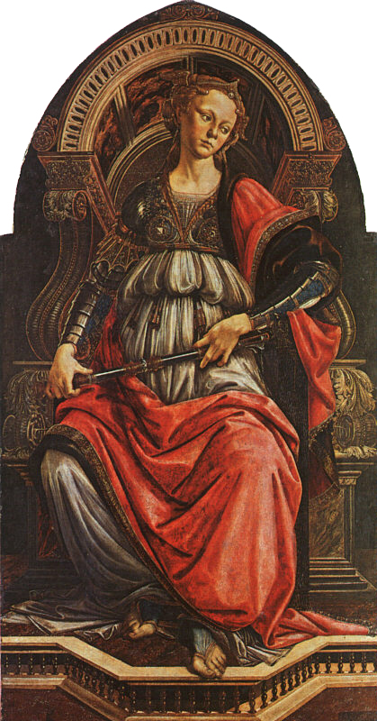
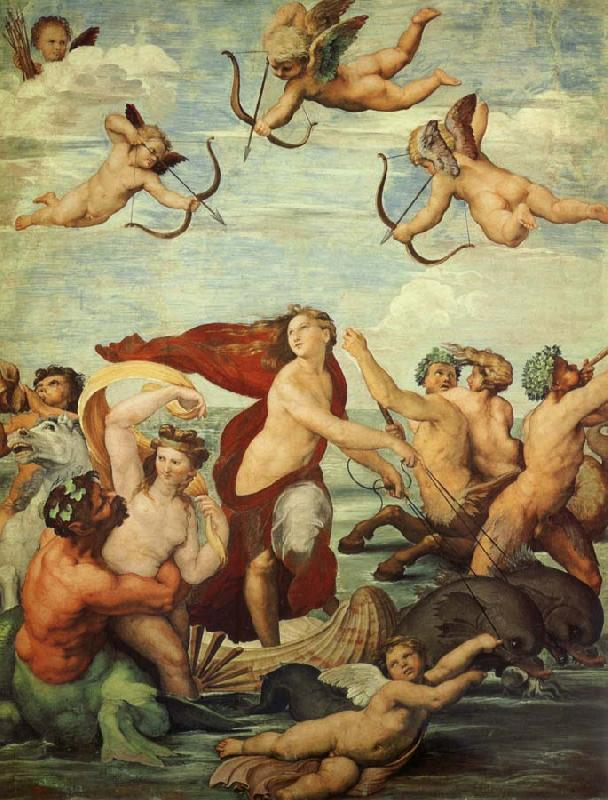
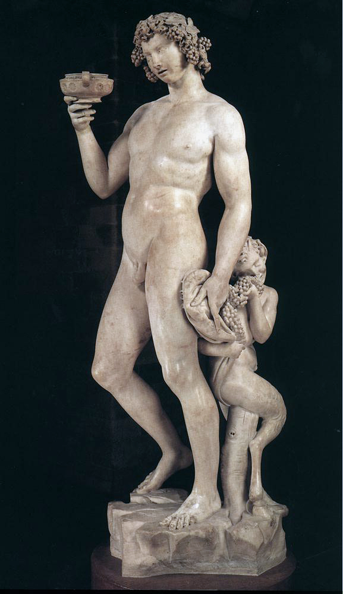
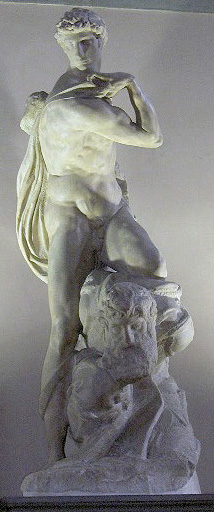

jQuery Cycle2; version: 2.1.6 build: 20141007http://jquery.malsup.com/cycle2/Copyright (c) 2014 M. Alsup; Dual licensed: MIT/GPL
Robert, Image by prettysleepy1 from Pixabay

Sophie, Image by OpenClipart-Vectors from Pixabay

bg, Image by Pexels from Pixabay

bg2, Image from Pixabay

bg3, Image from Pixabay

dialog1,dialog2, Image from pixabay
Vitruvian man free icon, Image from flaction


Quote, Image from flaticon

Vitruvian Man, Image from Pixabay
Louvre, Image from Pixabay

Sandro Botticelli
Fortitude

Venus and Mars

la-primavera
venus of birth

Virgin and child

portrait of young man

Da Vinci

Mona Lisa

The virgin of rock

The last supper
head of women

The lady with and Ermine

Bust of Niccolo Da Uzzano

Donatello sculpture

Donatello's David

Magdalene Penitent
Saint John
Donatello
Madonna and child with saint John

Raphael
Raphael_Galatea

Sistine Madonna

The School of Athens
Transfiguration_Raphael

La Donna Velata

David
.jpg)
Last Judgement_
Bacchus

The creation of Adam
Victory
Michelangelo
Header Video